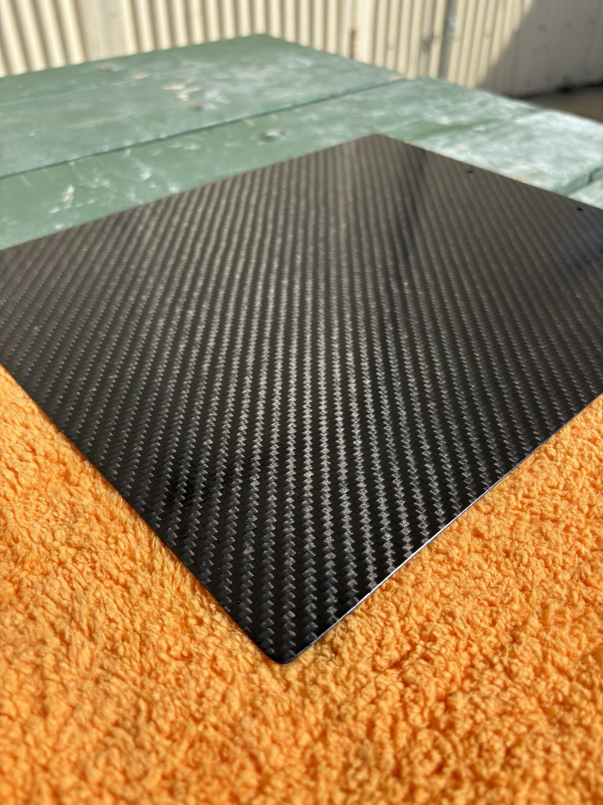
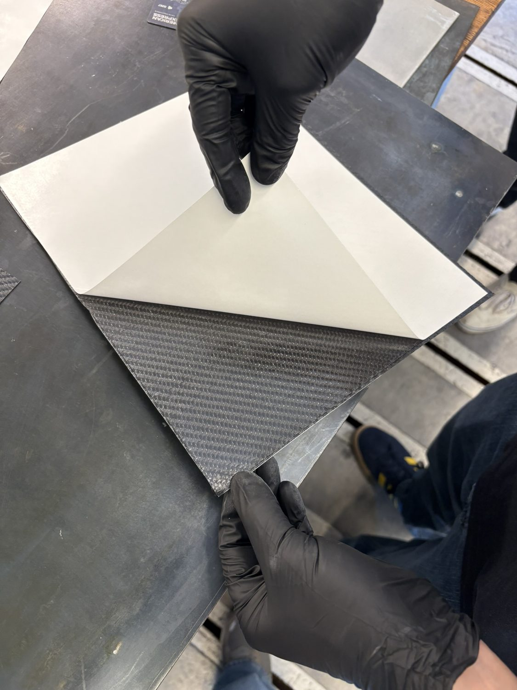
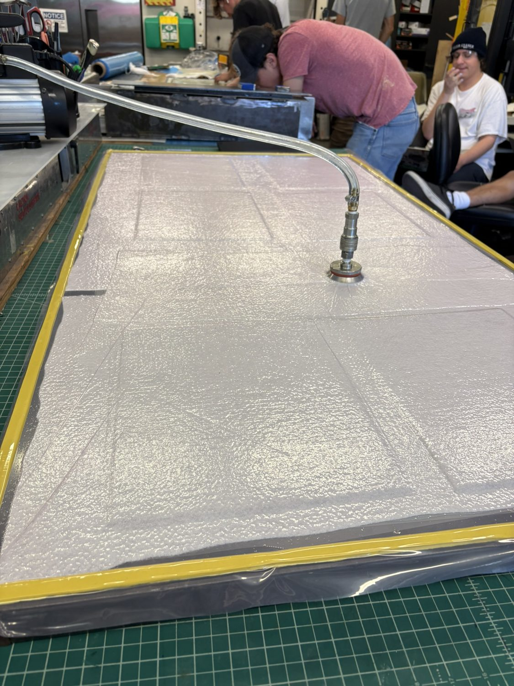

PROJECT 10 / 11 · ME161
Carbon Fiber Clipboard
A pre-preg carbon fiber clipboard built in ME161, autoclave cured for a crisp cosmetic finish.
ClassME161
MaterialPre-preg carbon fiber
ProcessAutoclave cure
FinishCosmetic twill
Overview
An ME161 fabrication exercise: a pre-preg carbon fiber clipboard, vacuum-bagged and autoclave cured for full consolidation and a clean cosmetic twill surface.
Highlights
- Pre-preg carbon layup
- Vacuum bag and autoclave cure
- Cosmetic twill finish
Gallery / 04 frames



